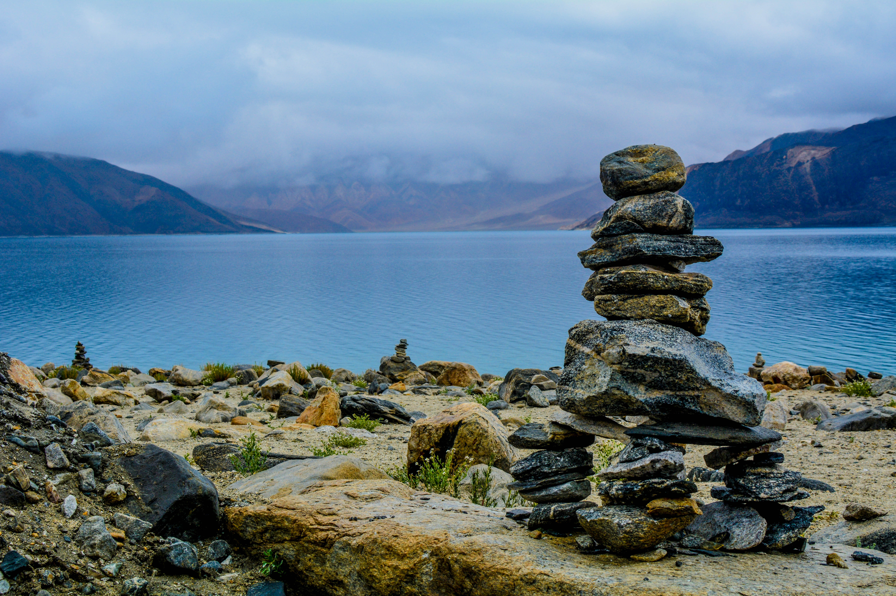
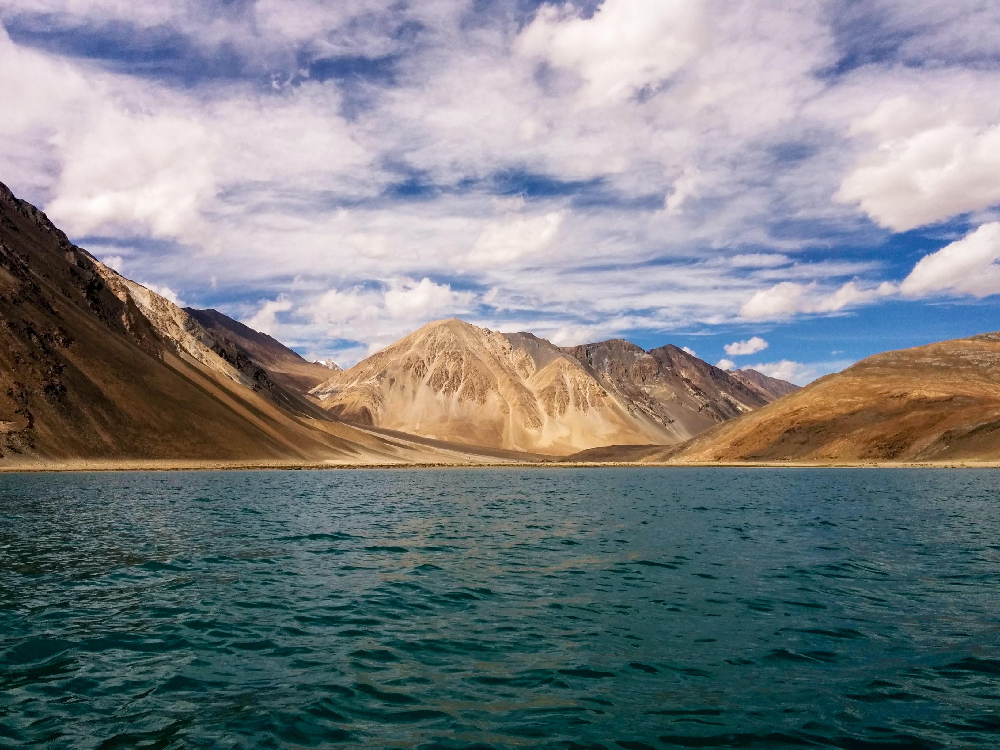
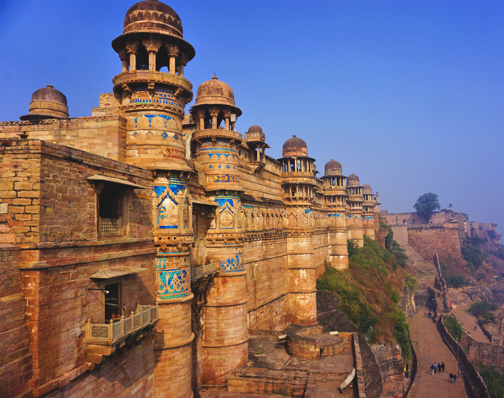
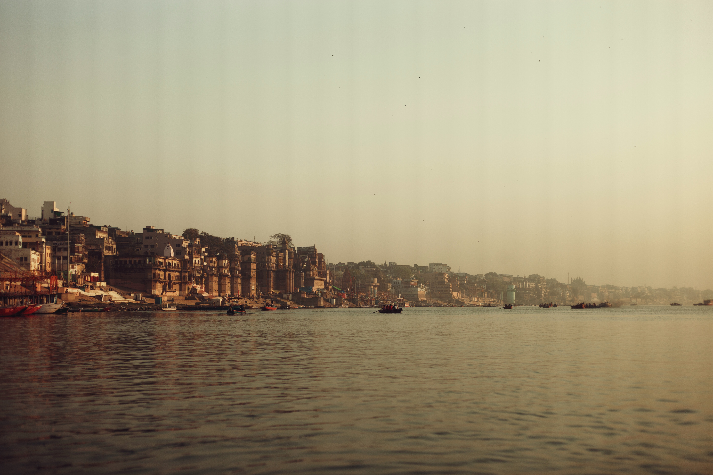

Top 5 places to visit in India
India is an enormous and diverse destination. Bordered by Pakistan, China, Nepal, Bhutan, Sri Lanka, Bangladesh and Myanmar, not to mention the Arabian Sea and the Bay of Bengal, means that there are many different sides to the country. More than 20 official languages, multiple religions and a variety of cuisines exist within India’s borders. To truly experience the breadth of Indian culture and history, travel is key. Head to as many of these best places to visit in Indias as your itinerary allows
1. Kashmir
Choice of vacation destinations in India seem to be infinite; from scenic destinations to historically and culturally soaked sites, from cities bustling with chaos and confusion to destinations offering laid-back and relaxed stays. Amidst this huge list of destinations, there is always a dilemma of choosing a destination that is really worth a visit. Well! Relieving you of this dilemma, here is a list of top 15 destinations that make it to the list of ‘Must-Visit’ destinations in India for all travellers. Let’s now, find out the reasons as to why this is so. Kashmir – For its captivating natural beauty Dal Lake Kashmir One of the most incredible places in India, Kashmir is known for its enthralling beauty and is rightly nicknamed as the ‘Heaven on Earth’. With its Picturesque lakes, striking fruit orchards, verdant meadows surrounded with thick woods of pines and deodars, lush green gardens teeming with vibrant flowers and captivating valleys enclosed with snow-covered peaks of Himalayan and Pir-Panjal ranges – Kashmir seems to have directly made its way out from a picture postcard.
2. Leh-Ladakh
The land of majestic snow-capped mountains, serene alpine glacial lakes, enchanting valleys and ancient colourful Buddhist monasteries, Leh-Ladakh is one of the ‘must-visit’ destinations in India for nature lovers and people seeking peace and serenity away from the busy city lives. Being home to plenty of serene alpine glacial lakes, some of the world’s highest mountain passes and high-altitude scenic trekking trails, Ladakh is also a dream destination for intrepid travellers and adventure freaks across India and different corners of the world. Be it the feeling of extreme spirituality and divinity listening to the chants and hymns of lamas in the ‘Hemis Monastery’, the tranquillity of ‘Pangong Lake’ offering an indescribable sense of peace and solitude.
3. Delhi
Delhi, the bustling capital of India makes for one of the perfect travel destinations in India. A city of heritage monuments, teeming bazaars and mouth-watering street food reminding you of its rich past from the Mughal era to a city that is today, more cosmopolitan and contemporary with its sprawling boulevards, high-end malls, shopping complexes and luxury hotels and restaurants; Delhi is for sure, a true amalgamation of age old cultures and present day’s modernization. Be it a stroll through the narrow lanes of ‘Chandni Chowk’ relishing on its lip-smacking chaats, a real shopping fun in the streets of ‘Sarojini Nagar’ or more exotic ‘Delhi Haat’, a heritage walk through the awe-inspiring Mughal architectural masterpieces of ‘Humayun’s Tomb’ and 'Qutub Minar'.
4. Varanasi
India is a land of cultures, religions and spirituality, therefore, an Indian exploration remains incomplete without a trip to the holy city of Varanasi. Also known as the city of ‘Moksha’, the place holds a great religious significance for Hindus. Situated on the banks of sacred river Ganga, the city is believed to be more than 5000 years old. Bustling with enchanting ancient temples and holy Ghats crowded with people performing various rituals and prayers, Varanasi makes for an ultimate spiritual travel destinations India. From paying homage to Lord Shiva in the famous ‘Kashi Vishwanath Temple’, taking a dip in holy waters of river Ganga absolving your sins.
5. Jaislamer

Also known as the ‘Land of Golden Sand’, Jaisalmer in Rajasthan is a beautiful city known for its rich cultural heritage and stories of bravery and chivalry of the great Rajput rulers. An exotic city set amidst endless stretches of golden Thar Desert, Jaisalmer spells a magnetic pull at travellers sitting in different corners of the world. Be it the magnificence of the ‘Sonar Quila’ or the ‘Jaisalmer Fort’ beaming in its full glory, the magical charisma of the ancient ‘Salim Ji ki Haveli‘, ‘Nathmal Ji ki Haveli‘ and ‘Patwon-ki-Haveli‘ reminding us of the royal grandeur of erstwhile wealthy Rajput merchants, an enthralling experience of ‘Sand Dune Bashing’, a rustic charm of a ‘Camel Safari’.